Web Bluetooth SDK for ORPHE INSOLE
ORPHE-INSOLE.js
Build browser prototypes with ORPHE INSOLE pressure, motion, and orientation data. ORPHE INSOLEをWeb Bluetooth経由で扱い、足裏圧とモーションを使ったWebアプリを作れます。
What is ORPHE INSOLE?
Smart insole data, ready for web prototypes.
ORPHE INSOLE is a smart insole with pressure sensors and an IMU for real-time foot movement measurement. ORPHE-INSOLE.js connects that stream to browser apps through Web Bluetooth.
Foot pressure and motion in one stream
Use pressure values together with converted acceleration and gyroscope values for gait, balance, sports, and rehabilitation experiments.
No native app setup for early tests
Open the examples in Chrome or Edge, connect with Web Bluetooth, and start inspecting live packets.
Compatible with existing ORPHE style APIs
Use new Orphe(...) or the clearer new OrpheInsole(...) alias while keeping familiar callbacks.

Official product details
A pressure and motion platform inside the insole.
The official ORPHE INSOLE pages describe a replaceable smart insole that measures foot pressure and motion in real time, connects with apps or external devices, and supports smart-shoe prototyping.
Each foot includes six pressure sensors plus 3-axis acceleration and 3-axis gyroscope data.
Store-listed ranges for acceleration, gyroscope, and pressure measurement.
Sampling rate may vary depending on the application and mode.
The store lists magnetic connector charging and wireless charging with a separately sold ORPHE MAT.
US Men's sizes 3.5 to 9.5 are listed, with 7.5 marked unavailable and more sizes planned.
The evaluation kit page mentions TestFlight app distribution, raw data recording, and open-source Python and JavaScript libraries.
The official store currently presents ORPHE INSOLE β as an Evaluation Kit for approved customers and research partners, including three pairs of insoles and an iOS application.
What data can I get?
Pressure, motion, and orientation callbacks for browser apps.
The library parses INSOLE SENSOR_VALUES packets and routes values into callbacks you can use directly in UI, games, visualization, and data logging tools.
Pressure values
Receive foot pressure samples and packet metadata for balance, loading, and contact timing.
Acceleration
Use converted XYZ acceleration values for movement intensity, step timing, and interaction design.
Angular velocity
Track rotational motion from the foot-mounted sensor without writing your own BLE parser.
Quaternion
In default mode 4, receive orientation values together with pressure and motion data.
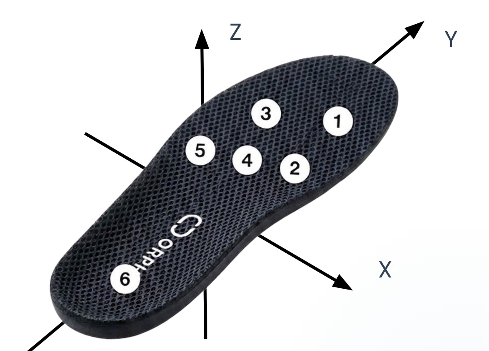
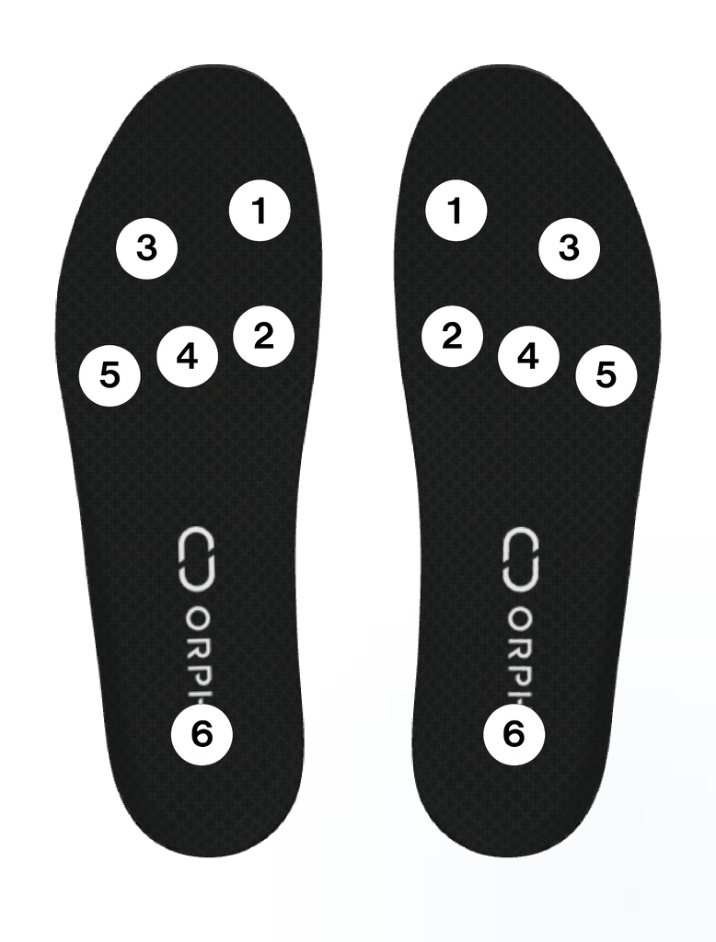
Coordinate system and pressure sensor placement
The sensor frame is right-handed and Z-up: Y points toward the toes, X to the right of the toe direction, and Z upward out of the insole top surface (accZ reads about +1 G at rest). Six pressure sensors per foot are numbered 1–6 as shown; press.values[i] corresponds to sensor i + 1.
More details in the DEMO App manual (sensor reference and CSV output spec)
Recognition and use cases
Designed for real movement data, from sports to safety research.
PR TIMES states that ORPHE INSOLE was selected for CES 2026 Best of Innovation and highlights sports and fitness, biomechanics and AI datasets, and industrial work-safety applications. This SDK page focuses on the browser layer for inspecting and prototyping with the raw pressure and motion stream.
Quick Start
Connect one ORPHE INSOLE and print pressure data.
Include the CDN build, create an OrpheInsole instance, call setup(), and start the default streaming mode with begin().
| Mode | Data stream |
|---|---|
4 |
Gyro, acceleration, pressure, quaternion. Default for begin(). |
3 |
Gyro, acceleration, pressure. Use begin({ streamingMode: 3 }). |
1 |
Legacy real-time sensor values for compatibility tests. |
Deep-dive references: sensor & packet spec, troubleshooting, and pressure-data recipes.
<button onclick="connectInsole()">Connect ORPHE INSOLE</button>
<pre id="sensor-data"></pre>
<script src="https://cdn.jsdelivr.net/gh/Orphe-OSS/ORPHE-INSOLE.js@v1.2.1/dist/orphe-insole.min.js"></script>
<script>
const insole = new OrpheInsole(0);
window.onload = () => {
insole.setup();
insole.gotPress = (press) => {
document.getElementById("sensor-data").textContent =
JSON.stringify(press, null, 2);
};
insole.gotConvertedAcc = (acc) => console.log("acc", acc);
insole.gotConvertedGyro = (gyro) => console.log("gyro", gyro);
insole.gotQuat = (quat) => console.log("quat", quat);
};
async function connectInsole() {
// Default streamingMode is 4.
await insole.begin();
}
</script>Start building
Choose the entry point that matches your test.
Use the dashboard for live inspection, the terminal for raw packet checks, and the API reference when you are ready to wire the data into your own app.
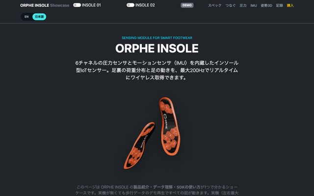
Showcase
Product specs, 6ch pressure heatmap, IMU charts, quaternion 3D view, CSV recording, and code snippets. Works without a device (demo playback).
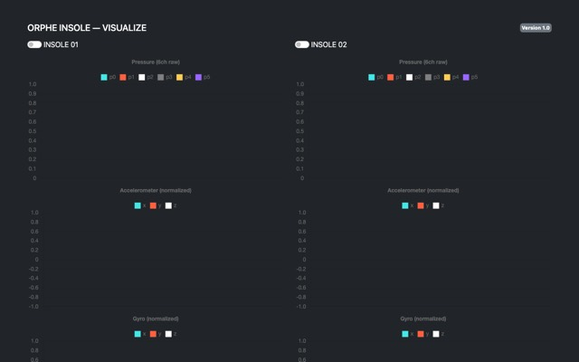
VISUALIZE
The recommended starting point: pressure, acceleration, and gyro charts for up to two insoles with throttled 30fps rendering.
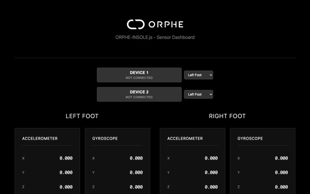
Sensor Dashboard
Connect one or two ORPHE INSOLE devices and inspect pressure, motion, quaternion, and left/right assignment.
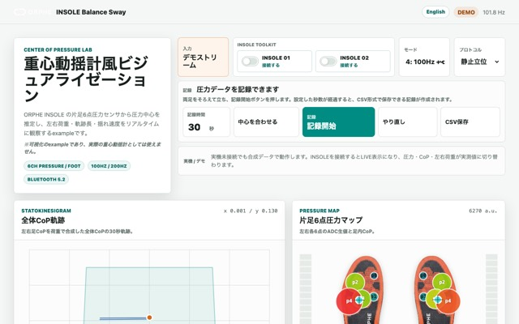
Balance Sway
Center-of-pressure trajectory, sway metrics, and left/right weight bearing with a built-in demo stream. Not a medical device.
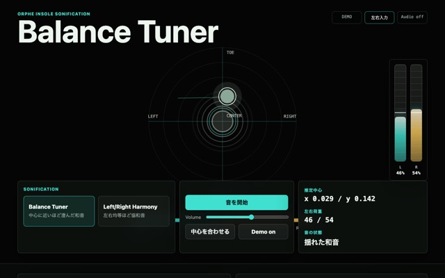
Balance Tuner
Turn estimated load center and left/right balance into pitch, pan, consonance, and controlled dissonance.
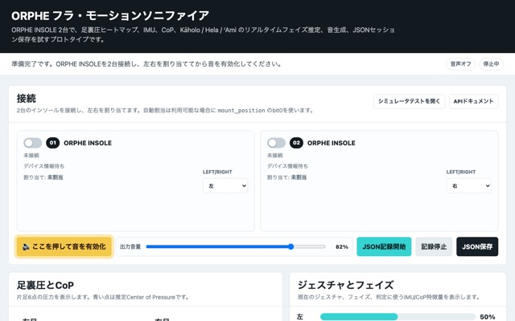
Hula Motion Sonifier
Detect hula steps from combined pressure and IMU signals and turn state changes into sound.
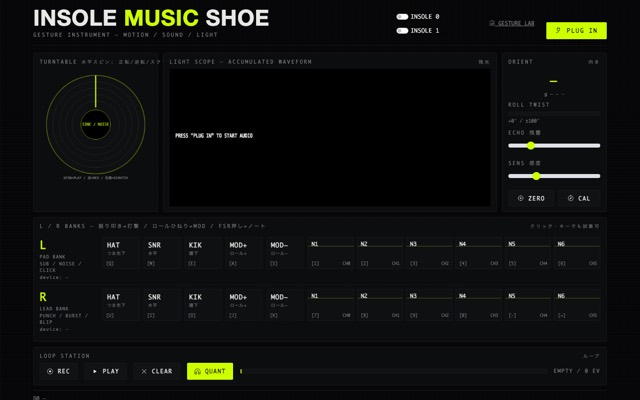
Music Shoe
Hold the insole in your hand and play it: orientation-gated hits, loop station, and a gesture-recording lab. Playable with mouse/keyboard too.
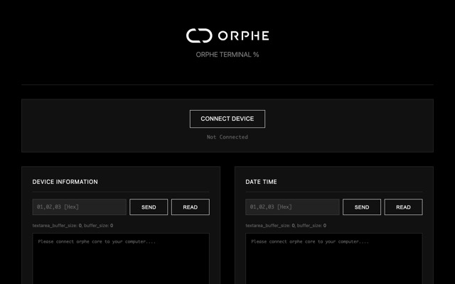
Terminal
Read and write BLE characteristics, watch raw SENSOR_VALUES bytes, and export captured values.
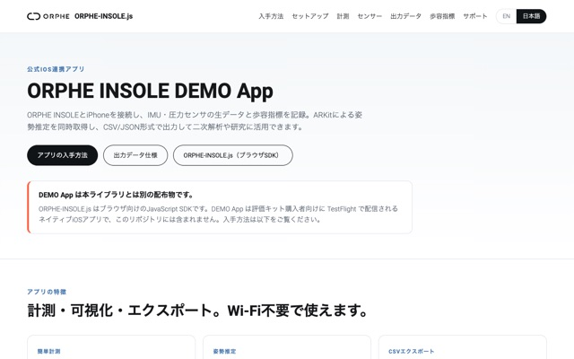
DEMO App
Measure on iPhone, capture ARKit pose estimation, and export raw IMU + pressure CSV with gait indicators. Distributed via TestFlight to Evaluation Kit customers.
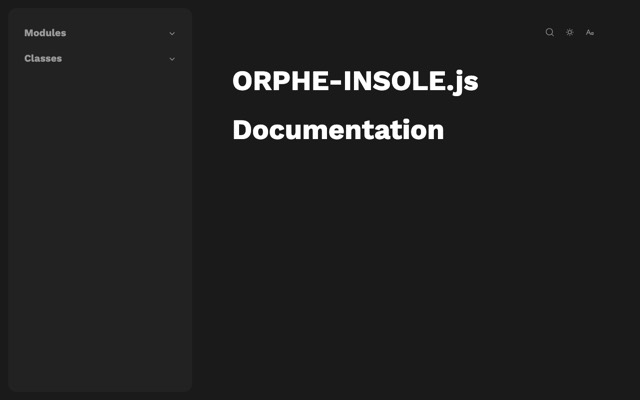
API Documentation
Browse generated JSDoc for the ORPHE INSOLE class, callbacks, BLE methods, and parser helpers.
What you can build
Prototype around the use cases ORPHE INSOLE is built for.
The product story centers on foot-pressure visualization, motion analysis, smart-shoe applications, and research-grade data collection. ORPHE-INSOLE.js gives web developers a direct way to explore those signals.
Pressure and posture feedback
Inspect pressure and foot-motion changes for running, training, coaching tools, and performance experiments.
Biomechanics datasets
Record synchronized pressure and motion streams for validation, exploratory analysis, and AI dataset creation.
Work-safety inspection
Explore fall, slip, trip, and fatigue-related motion signals before connecting them to larger safety systems.
Device inspection
Build dashboards for device state, packet health, left/right assignment, and data stream debugging.
Beta notice
ORPHE-INSOLE.js is currently provided as a beta library.
Documentation and tutorials are still being improved. Web Bluetooth requires Chrome or Edge (desktop / Android) — Safari and Firefox, including all iOS browsers, are not supported.
Usage policy
Free for education, research, prototypes, and non-commercial apps. Commercial use requires a separate agreement.
Following the current ORPHE-CORE.js policy, ORPHE-INSOLE.js is free to use, modify, and study for education and workshops, academic and non-commercial research, personal creative projects, prototypes, internal experiments, and free non-commercial apps or services built with ORPHE INSOLE.
Free use
Education/workshops, academic non-commercial research, personal creative projects, prototypes/internal experiments, and free non-commercial services are allowed.
Commercial use
Paid apps, paid services, commercial SDK integrations, commissioned products, or business services require a separate commercial agreement with ORPHE.
Version scope
This page follows the ORPHE-CORE.js v1.4.0 and later policy. ORPHE-INSOLE.js v1.0.0 and later should use the same usage policy for this repository.
Copyright and licensing
Copyright (C) 2025, Tetsuaki BABA and ORPHE.inc. See the usage policy for allowed uses and commercial agreement requirements.